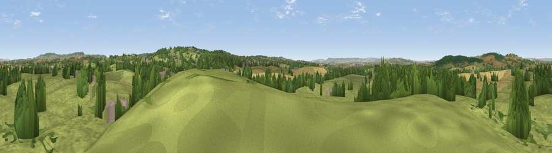

Viewpoint near Whimple
#21923 in England · top 39% of its area beats it · near WhimpleThe view, rendered

A 360° render of this exact spot computed from the terrain model, tree cover and land cover — summer colours, afternoon light, calibrated against photographs of famous viewpoints. Real trees, hedges and buildings will differ in detail.
The panorama
Grey silhouette: terrain skyline in each direction (720 bearings, Earth curvature and refraction included). Dashed green: skyline with trees (+15 m) and buildings (+8 m) as obstacles. Blue strip: how far the ground is visible on each bearing.
Where the view opens
Wedge length = distance to the farthest visible ground on that bearing (vegetation-aware). Rings at 10, 25 and 50 km.
What fills the view
67% grassland · 18% woodland · 11% cropland · 3% built-up
Angular shares of the visible panorama (visual magnitude), not map area. Landscape diversity 0.41 (0–1 Shannon).
Key numbers
More beautiful places nearby
The staircase of upgrades: each row has a higher view potential than everything closer. Driving times are estimates from straight-line distance, calibrated against real road routing — check an actual route before setting out.
| Place | Direction | Drive | Score |
|---|---|---|---|
| Viewpoint near Whimple | ESE · 3 km | ~6 min | 64.6 |
| Viewpoint near West Hill | SE · 3 km | ~7 min | 66.2 |
| Viewpoint near Bradninch | NW · 8 km | ~17 min | 72.5 |
| Hembury | NE · 9 km | ~18 min | 75.9 |
| Viewpoint near Bradninch | NW · 9 km | ~18 min | 77.7 |
| Viewpoint near Tipton St John | SE · 10 km | ~19 min | 81.5 |
| Viewpoint near Colaton Raleigh | SSE · 12 km | ~22 min | 82.1 |
| Viewpoint near Sidmouth | SE · 13 km | ~24 min | 83.0 |
50.77022, -3.36453 · source: screening · position refined by local search. Computed location — check access rights before visiting.